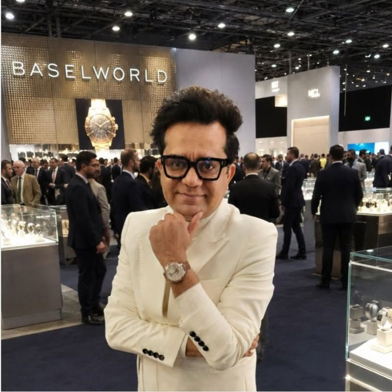

Our people
Three perspectives.One original idea.
The founder’s international watch experience, Sandy’s expressive visual language and Carter’s watch-design perspective came together in Amsterdam to shape the original thinking behind SANDY D. CARTER.


Public professional profile + founder account
Rajan Mehta
The vision to create an independent international watch brand.
Rajan Mehta is an entrepreneur and watch-industry professional whose work spans product development, sourcing, manufacturing, brand building, e-commerce and marketplace strategy. His official professional profile documents experience with international names including Danish Design and Jacob Jensen in the watch category.
From 2009 to 2013, Rajan lived and worked in the Netherlands. According to his firsthand account, that period sharpened his appreciation of European product aesthetics, proportion, functional elegance and considered presentation—and inspired the ambition that became SANDY D. CARTER.
Danish Design is referenced for its Scandinavian-inspired watch identity; Jacob Jensen for its Danish design heritage. Their names document Rajan’s professional experience and do not imply endorsement of SANDY D. CARTER.
Read the founder storyPublic professional profile + founder account
Sandy — The Creative Perspective
An expressive visual perspective rooted in illustration, identity and storytelling.
Sandy is a Dutch illustrator and creative professional based in Amsterdam. Her public biography describes a studio founded in 2015 and work spanning campaigns, brand illustration, packaging, retail environments, murals and editorial projects.
She completed a BA in Illustration at Willem de Kooning Academy in Rotterdam in 2013. Her published work is recognised for confident curved lines, vivid colour, strong composition and an ability to translate stories into a distinct visual language.
Her public portfolio includes work for names such as UNIQLO, Nike, Spotify, IKEA, Google Home and Benefit Cosmetics. Those portfolio references do not indicate that any of those organisations endorses or is connected with SANDY D. CARTER.
According to Rajan Mehta’s firsthand account, Sandy’s role in the founding conversations was to bring individuality, expression, contemporary visual culture and personality into the original brand thinking.
View Sandy’s public portfolioFounder-supplied history · credentials pending verification
Carter — The Watch Design Perspective
A mature watch-design perspective balancing form, function and lasting proportion.
Carter is described by the founder as a senior male designer who was based in the Netherlands during the formative period, with experience in European watch design and the watch industry.
His contribution centred on watch proportions, case and dial aesthetics, material considerations, functional elegance and product balance. That technical and product-oriented perspective complemented Sandy’s expressive visual thinking and Rajan’s entrepreneurial vision.
Carter’s full legal name, education, employers, qualifications, portfolio and individual projects have not yet been independently documented for publication. No unsupported institution, brand affiliation, award or watch design is attributed to him.
Three creative minds.
One design DNA.
Rajan brought the ambition and bridge to commercial reality. Sandy brought expressive individuality and visual storytelling. Carter brought watch-design discipline, proportion and material thinking.
According to the founder’s account, their discussions at Droog Amsterdam explored how those three perspectives could become an independent watch brand—simple without anonymity, functional without coldness and expressive without unnecessary complexity.
The founding story